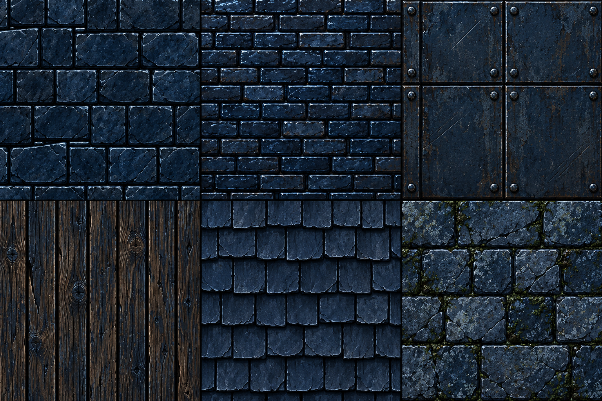
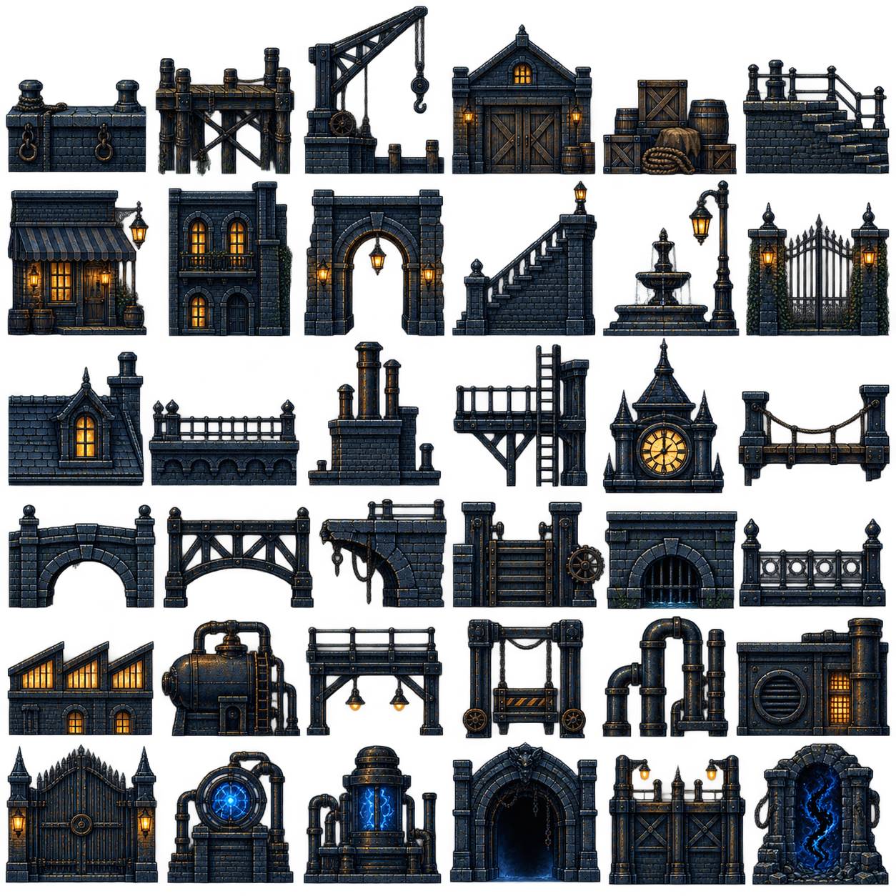
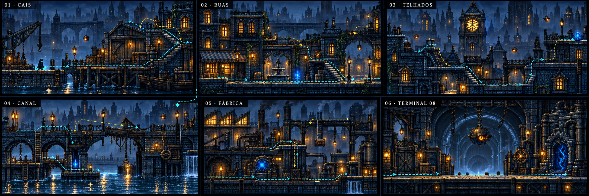
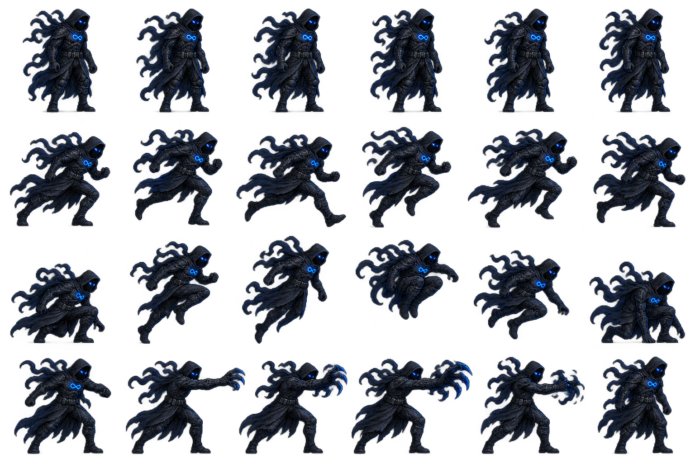
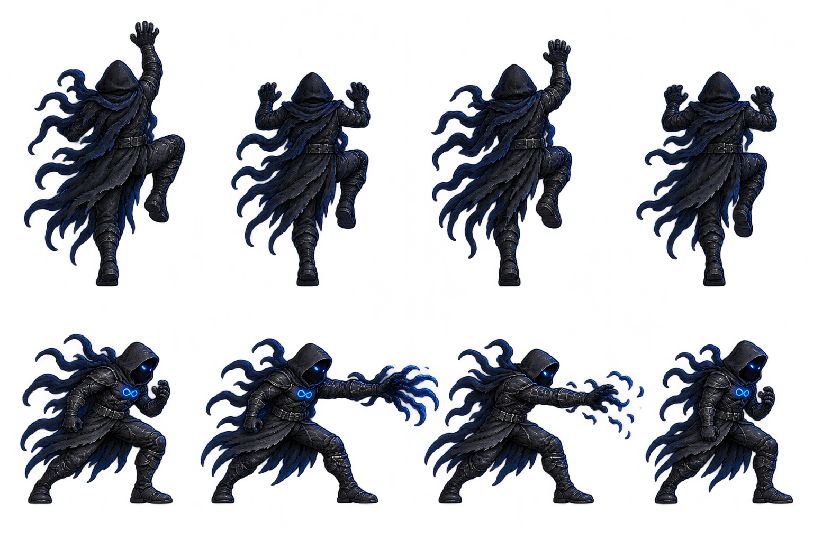
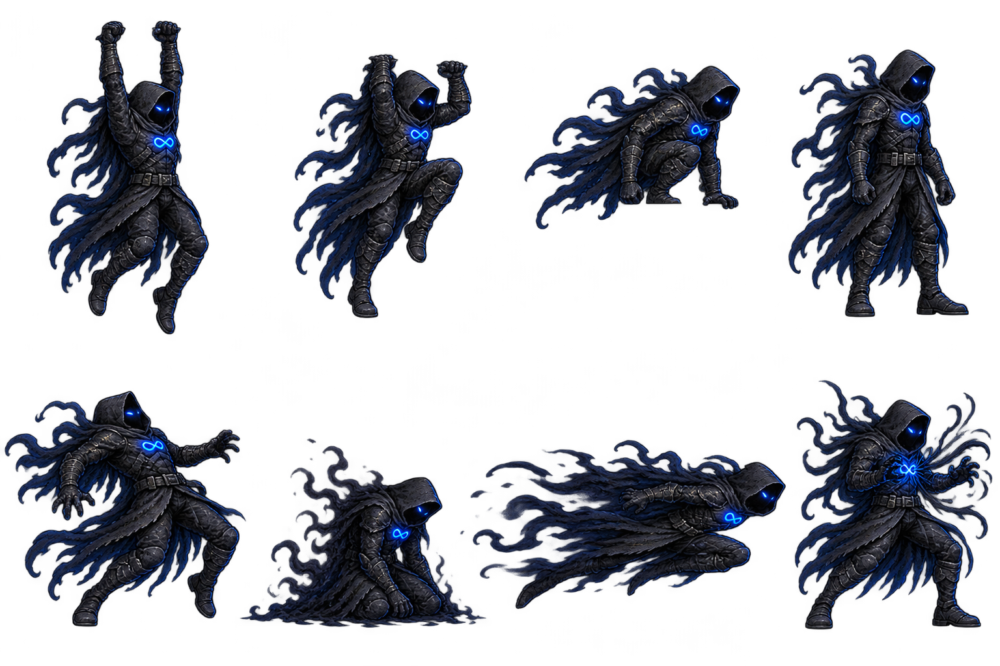
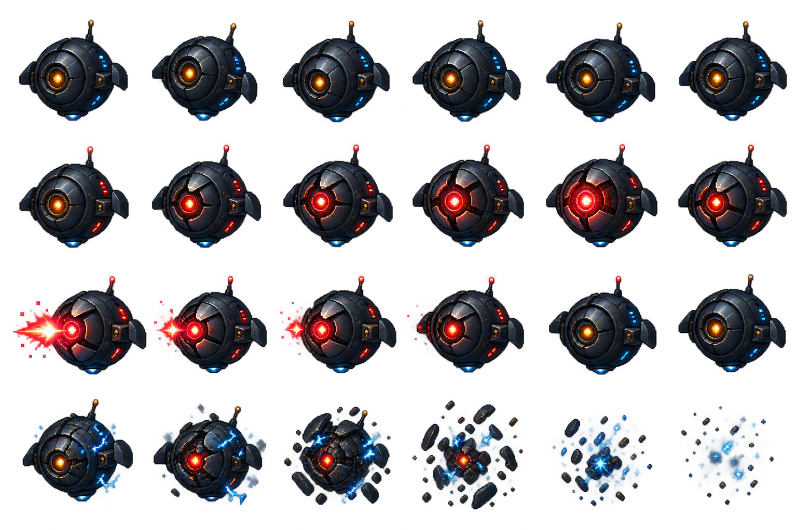
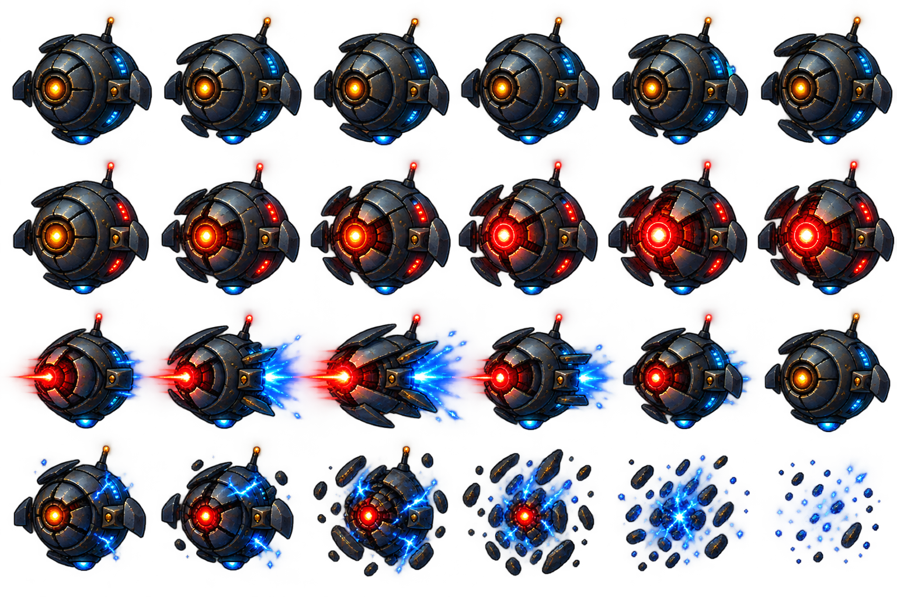

SHADOWMAN · Fase 1
Kit de produção para revisar animações, materiais e a planta completa. Não é um novo jogo. A integração só vem depois da revisão deste material.
Abrindo Phaser…
A linha azul indica o pivô de referência; não é uma plataforma. Braços e pés precisam ser conferidos nos apoios antes de integrar.
Planta técnica da fase inteira
Oito áreas conectadas, rotas altas/baixas, escadas, elevador, recompensas e atalhos. Esta planta define apoios e rotas. O acabamento do cenário seguirá a referência artística.
Cinza: pedra · marrom: madeira · azul: metal · amarelo: degraus · ciano: escadas · verde: recompensa · círculos: entradas/saídas.
Tileset e referência visual
Materiais em alta resolução separados de colisão e decoração. A referência artística continua sendo a cidade aprovada.



Folhas de personagens





Phaser com organização por responsabilidades
Scenes carregam áreas e gerenciam a câmera. Actors representam herói e inimigos. Components cuidam de animação, movimento, combate e interação. States definem transições. Data guarda mapas, atlas e ajustes.
Essa separação aproveita conceitos de organização usados na Unreal; o runtime aqui é Phaser 3.90, não Unreal. Neste catálogo, só ator e componente de animação estão ativos. Física, combate e cenário final serão integrados na próxima etapa.
Revisões antes de integrar
Manifesto de assets · Auditoria técnica · Mapa e conexões